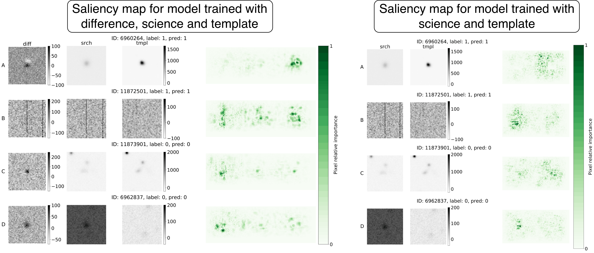
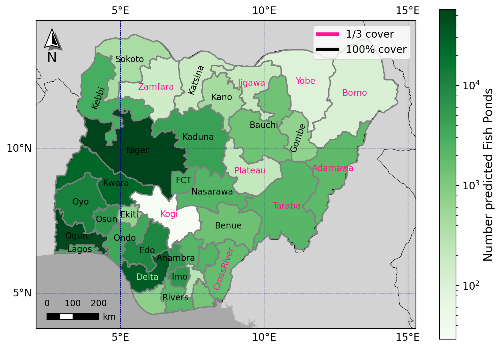

Tatiana Acero-Cuellar
she/her/ella


I'm developing the Real-Bogus (a.k.a. the reliability) model for the Vera C. Rubin Observatory. I have already delivered three versions of the model, which are reported in the technical note DMTN-337 (and a paper is coming up soon!). A version of the model was deployed to assign the reliability score for all detections in the Data Preview 1 and Data Preview 2. The last and current version of the models is being deployed for the generation of the LSST-alert data.
The machine learning reliability model for Rubin is a light Convolutional Neural Network (CNN) that assigns each detected source a reliability score in [0,1], where 1 indicates a real astrophysical source, and 0 indicates an artifact.
Before joining Rubin, I developed a Real-Bogus model using autoscan dataset (from the Dark Energy Survey), where I compared the performance of the classifier when training with the template, science, and difference image, and only with the template and the science. See paper here: Acero-Cuellar et al. AJ (2023)
(Hover over the points)
Distinguising between real and bogus astrophysical objects can be more challenging than just a binary classification. I created an informative latent space of autoscan dataset using a contrastive learning technique called Bootstrap Your Own Latent (BYOL). The plot is generated by reducing that latent space to a 2D space with UMAP. Similar things are closer in this space.

In Acero-Cuellar et al. 2023 I explored the saliency maps of both, the model trained using the template, science, and difference image, and the one only with the template and the science. We found that the most important pixels for the model with the triplet are usually in the difference image, and the one with only two images are in template image.

Feed-Forward simulation of Light Echoes. I am generating a simulated data set of Light Echoes images using the physics principles behind their formation, and observed properties of the dust medium. Light Echoes are detected on difference images; I am using the LSST Science Pipelines to inject the Light Echo simulations and perform Difference Image Analysis.
You can use the pipeline to simulate the raw LE image in github.com/taceroc/LEIMG.
and the pipeline to inject those raw LE images into DP1 images github.com/taceroc/LE_inj_dp1.


I created a fish pond dataset for Nigeria using a pipeline I developed and implemented as a multistage deep-learning+random forest approach. I trained, validated, and deployed a YOLO segmentation model, a state-of-the-art model for computer vision segmentation tasks. I managed data collection, annotation, and curation of the RGB Google-Satellite imagery and Sentinel-2 data.
A description of the dataset and the pipeline is reported in Acero-Cuellar et al. Sci Data (2026).
The dataset is already publicly available at Zenodo.
 Google Scholar
Google Scholar